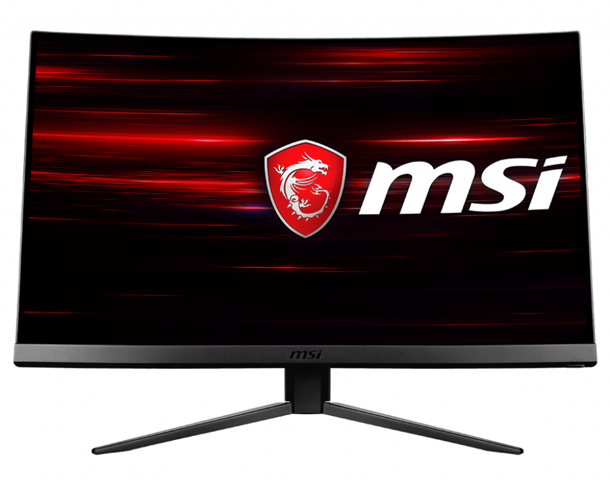

¿Que es el tiempo de respuesta?
El tiempo de respuesta es un tipo de retraso que se muestra en milisegundos,mientras
mas alto sean estos
milisegundos,mas tardara que muestre los fps en tiempo y forma.Por
el contrario si tiene muy pocos milisegundos
se mostrara mucho mas fluido si por ejemplo
estamos jugando a los videojuegos.
¿Los mejores paneles de monitores?
PANEL TN
El panel tn es un tipo de panel en cual se usa con frecuencia en el mundo del gaming.ya que el tiempo de respuesta es mucho menor,(por ejemplo:1ms)y por ende nos daria una tremenda ventaja,lo malo si es que te molesta,son sus colores.Ya que tiene muy poco tiempo de respuesta pero su nitidez de color es mala.

PANEL IPS
El panel ips es unico ya que se caracteriza por tener una buena nitidez de color al momento de estar
viendo una pelicula o video en youtube. Sin embargo el
sacrificio que hacen es aumentar el tiempo de respuesta
(por ejemplo:6ms).
Esto no significa que no sirva para el gaming pero dependiendo de tus objetivos con el monitor
sabras para que uso le vas a dar este monitor.

PANEL VA
El panel VA de seguro se lo imaginaran pero es una combinacion entre el ips y el tn,este mismo intenta imitar a los dos combinando un buen tiempo de respuesta
y una excelente nitidez de colores.Pero si se fijan ustedes mismos veremos que
esto no se cumple del todo.
¿Sincronizacion vertical?
seguramente lo habras escuchado miles de veces o visto si quiera,de seguro lo habras tocado pensando para que funciona si sinquiera habertelo pensado un segundo,bueno llendo al grano la sincronizacion vertical es un sincronizador que regula o establece la cantidad de fps maximos que va tu monitor para que no pase esto:
ANTES
DESPUES

ACTIVADO
DESACTIVADO
Y no me malintrepretes,no estoy diciendo que lo tenes que poner si o si o la pantalla de tu monitor se vera afectado,depende mucho de cuanto hz tenga.pero por ejemplo digamos que el counter- strike Global-Ofenssive va a 300fps.Pero tu monitor solo puede correrte 60 fps como maximo,entoces dependiendo de tu monitor vera un rasgado de pantalla o como me gusta decirle: